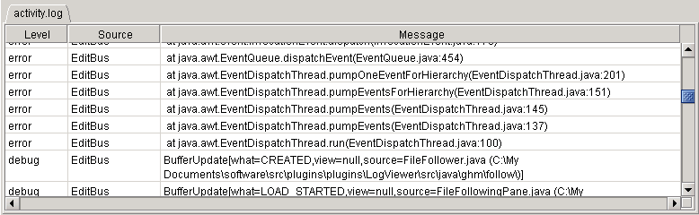

<html>
<head>
<title>Log Viewer: Table View
</head>
<body>
<h1>LogViewer</h1>

<h2>Parsing Log Files</h2>
As of version 0.6, LogViewer has the ability to parse log files at a very fine level of detail.  Log files can be displayed in a table with the log entries split up into columns, columns can be eliminated, columns can be rearranged and sorted, and entire rows can be automatically eliminated.  These features make it much easier to see only what you're looking for.
<p>

<p>
To have LogViewer parse a log file, a definition for the log file must be created.  The definitions are stored in an XML file, the DTD describing that XML file is here:
<p>
<a href="logviewer.dtd.html">LogViewer DTD</a>
<p>
The log definition file must be named "logviewer_types.xml" and must be stored in either your jEdit settings directory or in your home directory.  If you make changes to the definition file, you'll need to reload any open log files for the changes to be applied.
<p>

<h2>Log Definition Examples</h2>
Here is a very detailed example of a log definition file:
<p>
<a href="logviewer.xml.html">LogViewer XML Example</a>
<p>
The above link to a detailed example shows a number of log file definitions, but here is a simple example to show the jEdit activity.log file in LogViewer with a table:

<pre>
   &lt;log name="activity.log"&gt;
      &lt;!-- this file is always named "activity.log" --&gt;
      &lt;file_name_glob&gt;activity[.]log&lt;/file_name_glob&gt;
      
      &lt;!-- 
      This column_regex will show entries with message, notice, error, or
      warning level.  "debug" level messages will not be shown.
      --&gt;      
      &lt;column_regex groups="1, 2, 3"&gt;[\[](message|notice|error|warning)[\]] (.*?)[:] (.*?)(?m)$&lt;/column_regex&gt;
      
      &lt;!-- define the columns, show them all in a table --&gt;
      &lt;columns&gt;
         &lt;column&gt;Level&lt;/column&gt;
         &lt;column&gt;Source&lt;/column&gt;
         &lt;column&gt;Message&lt;/column&gt;
      &lt;/columns&gt;
   &lt;/log&gt;
</pre>

<h2>Parsing Log Files Without Using the Table Viewer</h2>
The parsing feature can be used without the table display, which can be faster for large log files. Simply set up a log file definition, but do not include the &lt;columns&gt; element.  Log entries will be selected and/or skipped by using the &lt;column_regex&gt; element, and will be displayed in the text viewer.  
<p>
Here is another way to look at jEdit's activity.log, again, debug messages are skipped, but no columns are defined, so the log entries will be shown in a text viewer:

<pre>
   &lt;log name="activity.log"&gt;
      &lt;!-- this file is always named "activity.log" --&gt;
      &lt;file_name_glob&gt;activity[.]log&lt;/file_name_glob&gt;
      
      &lt;!-- show all entries other than "debug" entries --&gt;
      &lt;entry_regex&gt;[\[](message|notice|error|warning)[\]] (.*?)[:] (.*?)(?m)$&lt;/entry_regex&gt;
   &lt;/log&gt;

</pre>

<h2>Sorting and Rearranging Columns in the Table Viewer</h2>
Columns can be rearranged by clicking on the column header and dragging the column left or right to the desired location.
<p>
Columns can be sorted:
<ul>
<li>
Mouse-click: Clears the sorting status of all other columns
and advances the sorting status of that column through three
values: {NOT_SORTED, ASCENDING, DESCENDING} (then back to
NOT_SORTED again).
<li>
SHIFT-mouse-click: Clears the sorting status of all other columns
and cycles the sorting status of the column through the same
three values, in the opposite order: {NOT_SORTED, DESCENDING, ASCENDING}.
<li>
CONTROL-mouse-click and CONTROL-SHIFT-mouse-click: as above except
that the changes to the column do not cancel the sorting of columns
that are already sorting.  This gives a way to initiate a compound
sort, for example, first by source then by level.
</ul>

<p/>

</body>
</html>
